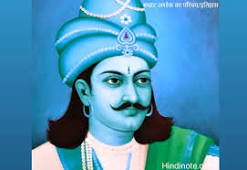
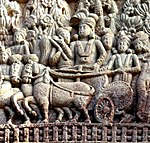

GSS Central
About GSS
गणतांत्रिक समाज संगठन आप सभी समाज के व्यक्तियों को हर्ष के साथ सूचित किया जाता हें कि एक संस्था का गठन गिया गया हें जिसका नाम “गणतांत्रिक समाज संगठन” होगा जो कि समाज के सभी वर्ग के लोगो के लिये एक अम्ब्रेला की तरह कार्य करेगा जोकि पुर्णतया नॉन पोलिटिकल होगा तथा टेक्नोलॉजी बेस्ड होगा जिसका मुख्य कार्य सबसे पहले पूरे देश में समाज के लोगो को जोडने के लिए कार्य करेगा. इस संगठन द्वारा यह कोशिश की जा रही कि जयादा से ज्यादा ग्रुप ऐ, बी, सी ऑफिसर अपना योगदान दे जिससे लोगो का विश्वास बढ़ सके. आज के समय में समाज के लोगो का विश्वास घटा हे तथा वो समाज के कार्यो में भाग नहीं ले रहे हे उसका मुख्य कारण समाज के संस्थानों में आत्म विश्स्वास कि कमी के कारण हे. इस प्रकार की दूरियों को दूर करने के मकसद से जीएसएस (GSS) संगठन द्वारा यह सुनिश्चित किया जायेगा कि पुरे सिस्टम में पारदर्शिता हो तथा समाज को आगे बढ़ाने में कार्य करेगा. जीएसएस के मुख्य बिंदु नीचे दिए गए हे जिन पर कार्य किया जा रहा हें:-
- GSS राष्ट्रीय, राज्य तथा जिला स्तर पर एग्जीक्यूटिव समिति बनायी जा रही हे जो पुर्णतया वोलुन्तीरली कार्य करेगे तथा इसे लोगो की सूचि बनायी जा रही हे. जिसके आप अपना बायो डाटा इस ईमेल पर भेजने का कष्ट करे : gantantriksamaj@gmail.com
- GSS प्रत्येक स्तर पर लॉगइन आई.डी. तथा पासवर्ड मुहैया कारयेगा जिसके द्वारा एप्लीकेशन को लॉग इन कर सकेगे.
- GSS कि वेबसाइट पर सभी प्रकार की Vacancies एंड Educational जानकारी उपलब्ध कराएंगे.
- GSS की वेबसाइट पर केंद्र सरकार तथा राज्य सरकार के द्वारा दिए जा रहे स्कीम के बारे में होगा जिसके समाज के लोग उनका लाभ उठा सकेगे.
- GSS हर जिले में एक ऑफिस खोलेगा जहा पर समाज के समस्त लोगो से आग्रह करेगा कि वह अपनीं कोईभी समस्या को लेकर आयेगे जेसे कि विधवा पेंशन, ओल्ड ऐज पेंशन, किसी दबंग द्वारा सताया जाना तथा इस तरह कोई भी समस्या तथा उनका निवारण सम्बन्धित स्पेशलिस्ट के द्वारा किया जायेगा जो कि पूर्णतया ऑनलाइन होगा.
- GSS का प्रत्येक गाँव में केवल एक ही विलेज वालंटियर होगा जो पूर्णतया समाज के लिए कार्य करेगा एवं अपने ग्रुप में मेम्बर वनायेगा गाँव स्तर पर.
- GSS टेक्नोलॉजी द्वारा डायरेक्टरी बना रहा हे जिसमे प्रत्येक फील्ड में कार्यरत लोगो जेसे कि सरकारी सेवा में कार्यरत अथवा सेवानिवृत्त, अधिवक्ता, न्यायाधीश, इंजिनियर, व्यावसाई इत्यादि को जोड़ने में कार्य करेगा.
- GSS समाज के गरीब बच्चों को उनके योग्यता के आधार पर उनको सुविधाओं को प्रदान करना होगा जिसमे उनकी फीस देना, काउंसलिंग करना एतियादी होगे.
- GSS उन प्रतिभाशाली स्टूडेंट्स को फाइनेंसियल हेल्प करेगा जो आई. आई. टी. तथा आई. आई. एम्. में एग्जाम पास करेगा तथा वह फीस नहीं दे सकता उसकी फीस देने का प्रावधान करेगा.
- GSS अपने समाज कि छोटी से छोटी संस्थाओ जो अभीतक बिखरी हुई हे को एक साथ जोड़ने का प्रयास करेगा जिससे हम सब एक साथ खड़े हो जाये एवं अपनी मजबूती का एहसास हो.
- GSS समाज के मेधावी छात्र जो कि विदेश से शिक्षा प्राप्त कर रहे हें या फिर शिक्षा प्राप्त कर चुके हें का प्रतेक स्तर पर ग्रुप बनाया जाएगा जिसका फायदा समाज के मेद्वावी छात्र जो कि विदेश में पढना चाहते हे उठा सकेगे.
- GSS का प्रयास हे कि समाज के झुझारू कर्मस्थ लोगो को खोजे तथा प्रत्येक स्तर पर उनकी फौज खड़ी करे जिससे समाज में हो रहे भेदभाव एंड अत्याचार को रोका जा सके.
- GSS यह चाहता हे कि अगर एक भी समाज का व्यक्ति किसी कठिनाई में हे या उसको सताया जा रहा हे तो उसके साथ हमार जीएसएस परिवार उनके साथ खड़ा हो चाहे वह आर्धिक मदद या फिर उपस्थिती दिखाकर. यह सब सोशल मीडिया तथा टेक्नोलॉजी द्वारा संभव हे.
- GSS किसी भी डिपार्टमेंट में नई भर्ती होने वाले साथियों एवं हमारी बहनों का सम्मान किया जाएगा तथा जो कर्मचारी रिटायरमेंट होने वाले हैं उनको भी विदाई सम्मान दिया जाएगा और सब एकजुट होकर इस दिशा में कैसे बढ़े उसके लिए विचार विमर्श किया जाएगा हमारे आई. ऐ. एस., आईपीएस, आई.ऐ.आर.एस. ऑफिसर से लेकर एम् टी एस तक के सब कर्मचारी को जोड़ने के लिए संकल्प लिया हे जोकि समाज के कार्यो में अपना अपना योगदान प्रदान करेगे.
- gantantriksamaj@gmail.com, gsssamrat@gmail.com
- Address
- New Delhi, State- Delhi,
Country - India - Mobile
- +91 8957684957
दुनिया का पहला गणराज्य था प्राचीन भारत का वैशाली
समतामूलक समाज का द्योतक है गणतंत्र
महात्मा जोतिबा फुले
Maurya Emperor
Chandragupta
(350-295 BCE)
The first emperor of the Mauryan Empire in Ancient India.
He expanded an extensive kingdom in Magadha.
For more click
Chandragupta Maurya
Bindusara Maurya
(r.c.297-c.273 BCE)
The second Mauryan emperor of Ancient India.
He was the son of the dynasty's founder Chandragupta.
For more click
Bindusara Maurya
Ashoka
(c.268-c.232 BCE)
The third emperor of the Maurya Empire of the Indian subcontinent.
His empire covered a large part of the Indian subcontinent.
For More click
Ashoka Maurya
Dasharatha Maurya
(c.232-c.224 BCE)
The 4th Mauryan emperor of the Mauryan Empire in Ancient India.
He was a grandson of Ashoka The Great and is commonly held to the imperial ruler of India.
For more click
Dasharatha Maurya
Kunala Maurya

(263 BCE)
The Crown Prince and son of 3rd Mauryan Emperor Ashok in Ancient India.
The Great and Queen Padmavati[2] and the presumptive heir to Ashok.
For more click
Kunala Maurya
Samprati Maurya
(c.224-c.215 BCE)
the 5th emperor of the Mauryan Empire in Ancient India.
He was the son of 3rd Mauryan Emperor Ashoka's blind son.
For more click
Samprati Maurya
Shalishuka Maurya
(c.215-c.202 BCE)
The 6th Emperor of the Mauryan Empire in Ancient India.
He was the successor and son of Samprati Maurya.
For more click
Shalishuka Maurya
Devavarman Maurya

(c.202-c.195 BCE)
The 7th Emperor of the Mauryan Empire in Ancient India.
According to the Puranas, he was the successor of Shalishuka Maurya.
For more click
Devavarman Maurya
Shatadhanvan
(195-187 BCE)
the 8th Emperor of the Mauryan Empire in Ancient India.
According to the Puranas, he was the successor of Devavarman Maurya.
For more click
Shatadhanvan Maurya
Brihadratha Maurya
(c.187-c.185 BCE)
the 9th emperor of the Mauryan Empire in Ancient India.
He was killed by his general, Pushyamitra Shunga.
For more click
Brihadratha Maurya
Achievments
Achievments 1
I have capabilities to design and developed web applications solely and should have capabilities to lead solely teams as refrenced below